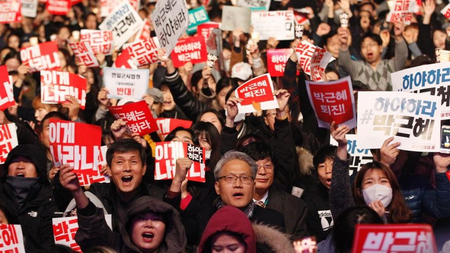

12/9/16:
MPs Poised to Vote on Park's Impeachment
The ongoing corruption scandal in South Korea has intensified with even key supports of President Park supporting her impeachment. This is major as Korea's presidential elections are next year in May. If she is forced out its a complete wild card in the political scene.
11/28/16
Record Numbers March for Park's ouster
These anti-corruption protests are now the biggest in South Korea since the 1980's with the ouster of South Korea's military dictatorship.